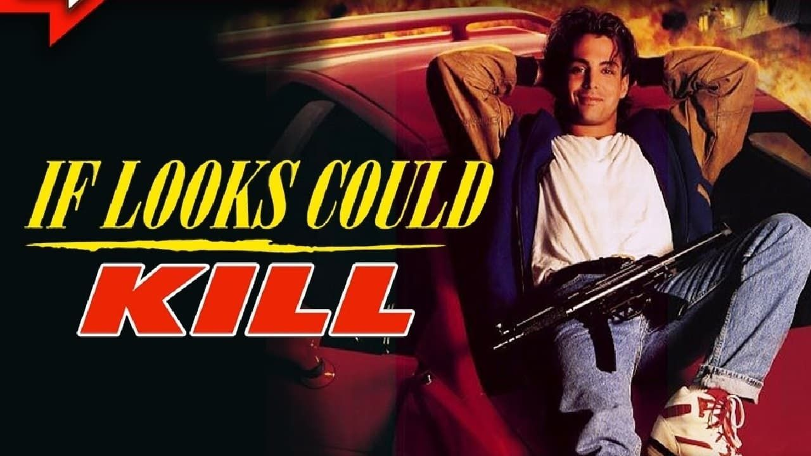
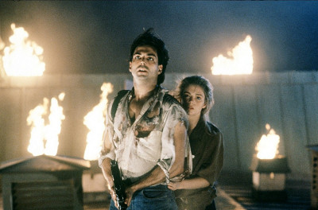
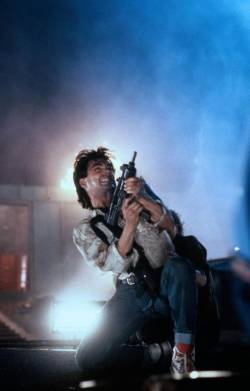

J'avais sept ans.
C'était 1990. Et Denis Booker était tout ce que je voulais devenir.
Pas un acteur. Pas un personnage de fiction. Un modèle. La façon de se tenir, de parler, d'occuper l'espace. Richard Grieco incarnait quelque chose que je n'aurais pas su nommer à cet âge — une certaine idée de ce qu'on pouvait être.
Trente-cinq ans plus tard, j'attends toujours le coffret Blu-ray de Booker. Prévu pour 2027.
Certaines fidélités ne s'expliquent pas.
En 1991, Hollywood a décidé de faire de Richard Grieco une star de cinéma.
Ce soir, on regarde comment ça s'est passé.

If Looks Could Kill — Warner Bros, 1991
If Looks Could Kill.
1991. Réalisé par William Dear. Avec Richard Grieco.
Un film produit par Warner Bros, sorti en salles avec une ambition claire — transformer la star de Booker et 21 Jump Street en tête d'affiche du cinéma d'action américain.
La jaquette promettait de l'espionnage, de l'humour, de l'action. James Bond pour une nouvelle génération. Un lycéen américain propulsé par accident au cœur d'une mission de la CIA en Europe.
Ce qu'on trouve à l'intérieur est plus intéressant que le résultat commercial ne le laisse entendre. Un film conscient de ce qu'il est — léger, rythmé, porté par un acteur qui avait tout pour réussir.
Tout. Sauf le moment.
1991.
Richard Grieco est au sommet de sa visibilité. 21 Jump Street l'a installé comme visage de la nouvelle génération d'acteurs américains. Booker lui a donné son propre territoire — plus sombre, plus adulte, plus personnel. Les magazines le couvrent. Les teenagers le connaissent. Hollywood pense tenir sa prochaine star d'action.
Warner Bros fait le pari. If Looks Could Kill est une production correcte, avec un budget honnête, une distribution européenne ambitieuse — tournage en France, en Angleterre — et Richard Grieco en haut de l'affiche seul pour la première fois au cinéma.
Le concept est solide. Un lycéen américain en voyage scolaire à Paris se retrouve par accident embarqué dans une mission d'espionnage de la CIA. Gadgets, cascades, humour, Europe comme terrain de jeu. La formule fonctionne sur le papier.
Mais 1991 est une mauvaise année pour ce type de film. Le public action cherche autre chose — plus grand, plus violent, plus spectaculaire. La légèreté de If Looks Could Kill, son ton de comédie d'espionnage assumée, arrive au mauvais moment dans le mauvais contexte.
Et Grieco paie l'addition.

Richard Grieco — If Looks Could Kill, 1991
Michael Corben est un lycéen américain moyen.
Mauvais élève, charmeur, pas vraiment le profil d'un agent secret. Pourtant, lors d'un voyage scolaire en France, il est confondu par la CIA avec un agent expérimenté qui porte le même nom.
Le voilà propulsé au cœur d'une mission d'espionnage en Europe — gadgets high-tech, vilains caricaturaux, complots internationaux — sans avoir demandé quoi que ce soit.
Le film joue la carte de la comédie d'action assumée. Pas de prétention, pas de gravité inutile. Un jeune homme ordinaire qui improvise dans un monde qui le dépasse, avec le charme comme seule arme réelle.
C'est léger. C'est rythmé. Et Grieco porte l'ensemble avec une aisance naturelle qui rappelle exactement pourquoi Warner Bros avait misé sur lui.
L'Europe des années 90 comme décor — châteaux, rues pavées, trains de nuit. Une carte postale d'époque.
Ce film n'est pas une erreur.
C'est une démonstration.
Richard Grieco y prouve tout ce que Booker avait déjà laissé entrevoir — le charme, le rythme comique, la présence physique, une façon naturelle d'habiter l'écran sans forcer. Il n'est pas là pour impressionner. Il est là pour séduire. Et ça fonctionne.
Le problème n'est pas l'acteur. Le problème n'est pas le film.
Le problème c'est que Hollywood avait mal lu ce qu'il incarnait.
Grieco n'était pas une star d'action. Il était une star de charme — un registre plus subtil, plus difficile à vendre sur une affiche, plus difficile à transformer en franchise. Les studios voulaient leur Van Damme, leur Seagal, leur colosse invincible. Grieco leur offrait autre chose — quelque chose de plus proche de Cary Grant que de Schwarzenegger.
En 1991, personne ne savait quoi faire de ça.
If Looks Could Kill est le film qui montre exactement ce que Grieco aurait pu devenir si Hollywood avait eu l'intelligence de comprendre ce qu'il avait entre les mains.
Il ne l'a pas compris.

If Looks Could Kill — 1991
If Looks Could Kill a raté son public pour une raison simple.
Il était trop léger pour le public action de 1991 et trop action pour le public comédie. Un film entre deux chaises, entre deux publics, entre deux époques.
Warner Bros avait misé sur la notoriété télévisuelle de Grieco comme levier de transition vers le cinéma. Ça n'a pas suffi. La notoriété télévisuelle de 1991 ne se convertissait pas automatiquement en billets de cinéma — les spectateurs qui aimaient Booker et 21 Jump Street n'étaient pas forcément le public des salles obscures du vendredi soir.
Le film sort, fait des entrées décevantes, et disparaît rapidement.
Et avec lui, la carrière cinéma de Richard Grieco.
Ce qui est particulièrement cruel c'est que le film n'a pas raté parce qu'il était mauvais. Il a raté parce que personne n'a su le vendre correctement, à la bonne audience, au bon moment.
C'est une catégorie d'oubli à part — pas le film raté, pas le film médiocre. Le film victime d'une stratégie commerciale qui n'a pas tenu ses promesses.
Parce que Richard Grieco mérite mieux qu'une parenthèse.
Dans la mémoire collective, il est devenu une anecdote des années 90 — le beau gosse de 21 Jump Street qui n'a pas percé au cinéma. Une case vide dans l'histoire du star system américain.
Ce que If Looks Could Kill documente, c'est autre chose.
Un acteur au sommet de sa forme, dans un film qui lui va parfaitement, prouvant avec une évidence désarmante qu'il avait tout ce qu'il fallait. Le charme, le timing comique, la présence. Pas la carrière de Van Damme. Pas celle de Seagal. Quelque chose de plus rare et de plus fragile — une légèreté naturelle que le cinéma d'action américain ne savait pas valoriser en 1991.
J'avais sept ans quand j'ai découvert Denis Booker. Trente-cinq ans plus tard je comprends mieux ce que je voyais — un acteur qui aurait pu redéfinir un genre si on lui en avait donné l'occasion.
On ne lui en a pas donné l'occasion.
SOMEDAY est aussi là pour dire que certaines carrières méritaient un autre destin.
If Looks Could Kill n'a pas changé le cours du cinéma américain.
Il n'en avait pas l'ambition.
Il voulait juste lancer une carrière. Celle d'un acteur qui avait tout pour réussir — le charme, le talent, le moment. Et qui s'est retrouvé du mauvais côté d'une décision commerciale qu'il n'avait pas prise.
J'attends toujours le coffret Blu-ray de Booker. 2027.
Richard Grieco n'a peut-être jamais eu la carrière cinéma qu'il méritait. Mais il a eu quelque chose que beaucoup de stars n'ont pas — la fidélité de ceux qui l'ont vu et qui n'ont pas oublié.
Ce film en est la preuve.
La cassette est dans le lecteur. On rembobine.
Titre original
If Looks Could Kill
Titre français
Espion Junior
Pays
États-Unis
Genre
Action / Comédie d'espionnage
Producteur
Warner Bros
Durée
88 min
Avec aussi
Linda Hunt · Roger Rees
Fil conducteur
Carrières avortées — Saison 1
SOMEDAY — EP. 05